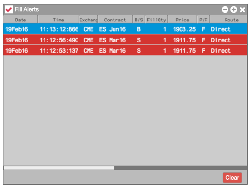

You can also display new fills in a Fill Alerts widget by enabling the Alert on new fills preference.

You can select Mark all as read from the context menu to remove the highlighting but leave the fills in the widget. You can also click Clear to remove the fills from the widget.